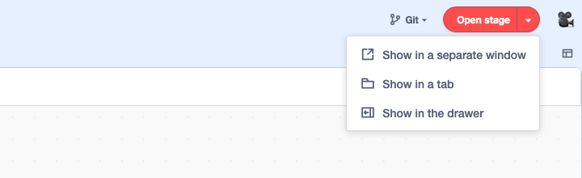
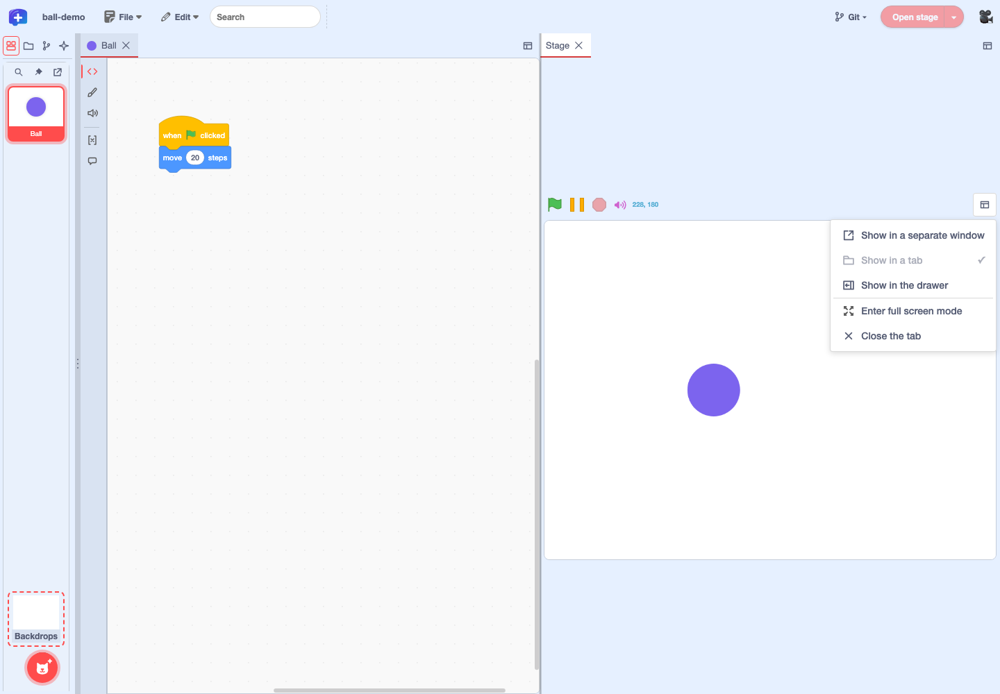
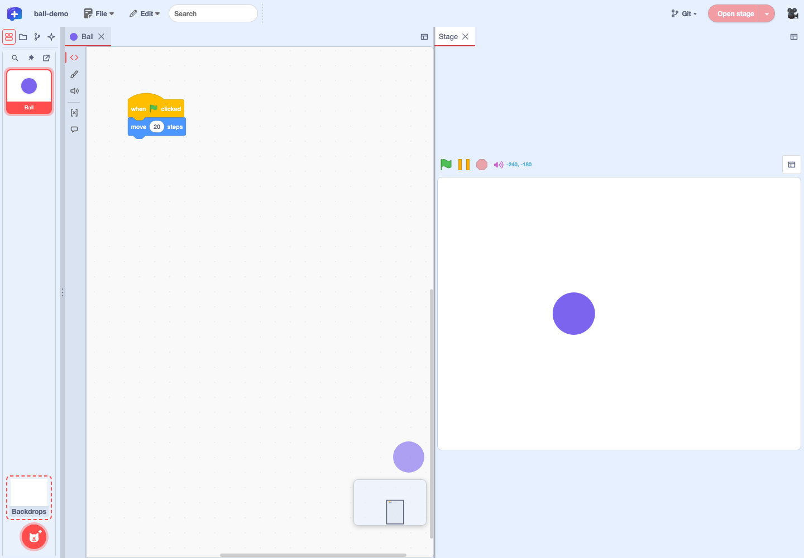

Feature guide 4/12 · Updated November 14, 2026
Open the stage and run your project
Open the stage with "Open stage" on the right of the menu bar, in whichever place suits your work: a separate window, a tab or the drawer. Full screen mode and moving the stage are in the stage's "Stage display" menu.
4.1 Open the stage from the menu bar
Press "Open stage" on the right of the menu bar to open the stage in a separate browser window. Press the "▾" to its right ("Stage opening options") to choose where it opens.
| Item | Where it opens | Good for |
|---|---|---|
| Show in a separate window | A separate browser window | Placing it on a second display next to your code |
| Show in a tab | A "Stage" tab in the workspace | Keeping the stage fixed next to your code |
| Show in the drawer | A drawer at the right edge of the screen | Showing it over the code area and closing it when you no longer need it |
While the stage is shown, "Open stage" and "▾" cannot be pressed. They become available again when you close or hide the drawer. To change where it is shown or switch to full screen, use "Stage display" on the open stage (The stage display menu).

Open the stage from the menu bar · Design of the stage opening options · Unified stage display menu
4.2 Run your project from the drawer on the right edge
Choose "Show in the drawer" and the stage opens in a drawer at the right edge of the screen, over the code area. Start the project with the green flag, and check how it behaves with pause and stop. Drag the left or bottom edge of the drawer to resize the stage.
At first the drawer stays open. Choose "Automatically hide the drawer" from the drawer's "Stage display" and the drawer closes when you click outside it, leaving a "Reveal stage" handle at the right edge of the screen. Press the handle to open the drawer again. To keep it open again, choose "Keep the drawer open" in the same menu.
"Automatically hide the drawer" is a setting that closes the drawer every time you click outside it. "Close the drawer" closes the drawer once, right away, whatever the setting. Either way, you can reopen the drawer from "Reveal stage" at the right edge or from "Open stage" in the menu bar. The project keeps running while the drawer is closed or hidden. The drawer's state is recorded for each project and restored the next time you open that project.
Stage on the right edge and in a separate window · Restore the drawer per project · Toggle keeping the drawer open
4.4 Move the stage into the workspace or a separate window
A stage opened in the drawer or a tab can be moved with "Stage display". To place it next to your code, choose "Show in a tab". A "Stage" tab opens in the workspace, and you can drag the divider to adjust its size. A stage in a tab is scaled up or down to fit the width of its pane. To move it back to the drawer, choose "Show in the drawer"; to close the stage, choose "Close the tab" or close the "Stage" tab.
To use it in a separate browser window, choose "Show in a separate window". You can move it there from either the drawer or a tab. Choose "Return to the editor" from "Stage display" in the separate window to close that window; the stage is then closed. To show it again, use "Open stage" in the menu bar.
"Show in a tab" moves it to a tab
"Show in the drawer" moves it to the drawer
"Show in a separate window" from the drawer or a tab
After "Return to the editor". Reopen with "Open stage"


Stage display menu · Returning from the separate window to the editor